在 分析 → 促销活动 部分，您可以查看促销活动对订单数量、收入和浏览量的影响，并决定进一步推广、选择促销机制和折扣幅度。
促销码分析
该工具展示带有促销码的促销活动分析。通过它您可以：
了解买家使用您促销码的频率；
评估以下方面的效果：
整个促销活动；
具体的促销码；
带有促销码的具体商品。
要查看分析，请进入 分析 → 活促销动 → 促销码分析 。
指标
表格中展示了买家使用促销码的商品信息：
促销活动信息：名称、活动时间、促销码对买家的可见性、促销码数量和类型。
促销活动或促销码的状态。
促销码使用分析：
“促销码应用次数”——买家激活促销码的总次数。按商品、促销码和促销活动展示数据。
“从应用促销码到下单的转化率”——已使用促销码次数与所有含促销码订单数的比率。退货和取消订单计入统计。
“订单数量”——使用促销码下单的订单数。退货和取消订单计入统计。
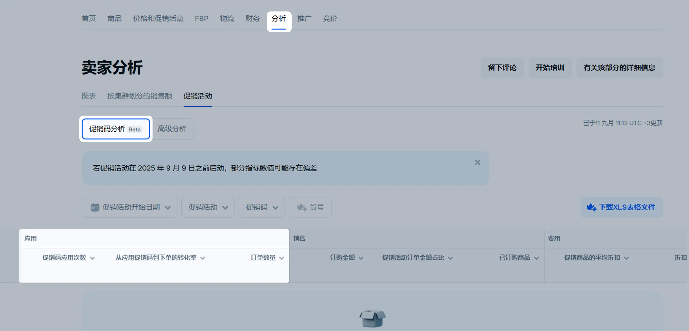
销售分析：
“订购金额”——使用促销码的商品总金额。退货和取消订单计入统计。计算时使用促销活动后的促销码价格，但不包括用于积分的折扣。
关于折扣积分的详细信息“促销活动订单金额占比”——某一促销码订单金额占整个促销活动订单金额的比例。例如：促销活动总订单金额为 10 000 卢。使用某个促销码，买家下单金额为1000卢布，占促销订单总金额的10%。
“已订购商品”——使用促销码订购的商品数量。退货和取消订单计入统计。
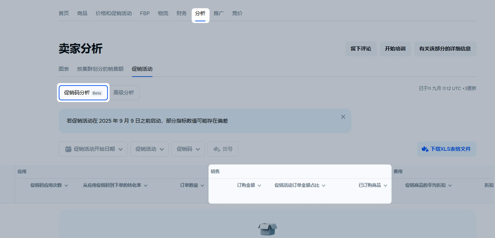
费用分析：
“促销商品的平均折扣”——使用促销码售出的商品的平均折扣值。折扣值取决于促销活动期间商品价格或折扣是否变化。促销码的销售按单个促销码计算，促销活动的销售按所有促销码总和计算。
示例
起初卖出 10 件商品，折扣 40%。后来折扣降至 25%，又卖出 5 件。
计算平均折扣：
分别计算每种情况下的总折扣：折扣 × 销售数量。然后相加。
40% × 10 + 25% × 5 = 525
将该值除以促销活动中售出的全部商品数量：
525 ÷ (10 + 5) = 35
结果：促销商品的平均折扣为35%。
“折扣金额”——使用促销码销售时的折扣总和。
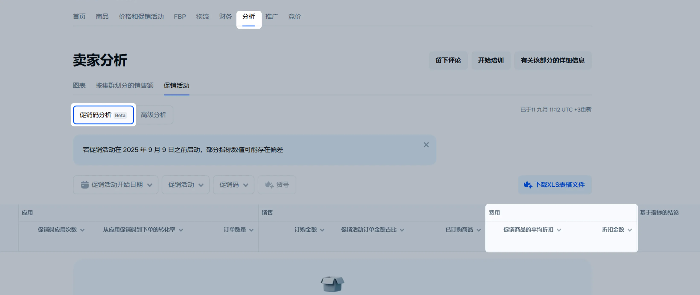
“基于指标的结论”和“建议”——将您的活动数据与其他卖家的促销活动数据对比，得出活动效果结论并提供优化建议。
要调整表格中的指标显示，请点击
 并选择指标。
并选择指标。
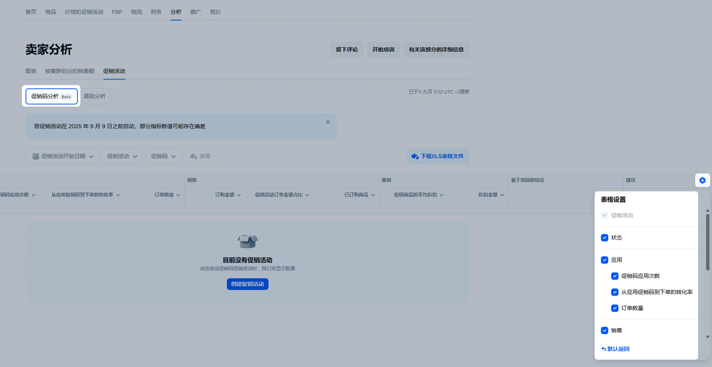
筛选器
选择要查看分析的促销活动、促销码或商品。为此可以对数据进行排序。筛选器包括以下设置：
促销活动开始日期 ——选择促销活动开始日期或时间段。
促销活动 ：
促销活动 ——选择一个或多个促销活动进行分析。
状态 ——按活跃、已完成或已关闭促销活动排序。
促销代码类型 ——选择促销活动中分发的促销码类型。
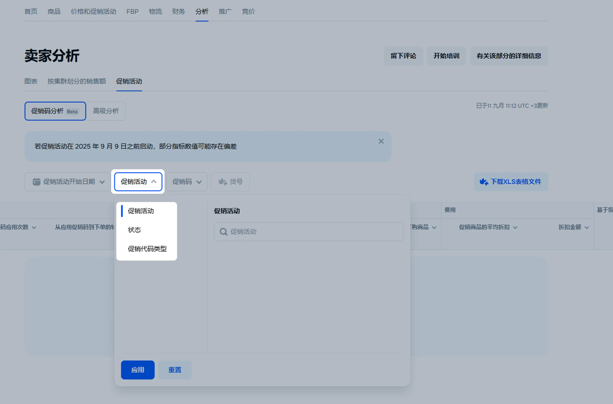
促销码 ——仅“主管”、“管理员”和“分析师”可用：
促销码 ——在搜索框中输入一个或多个促销码。请使用促销码的完整名称进行搜索。
促销码状态 ——选择促销码的状态。
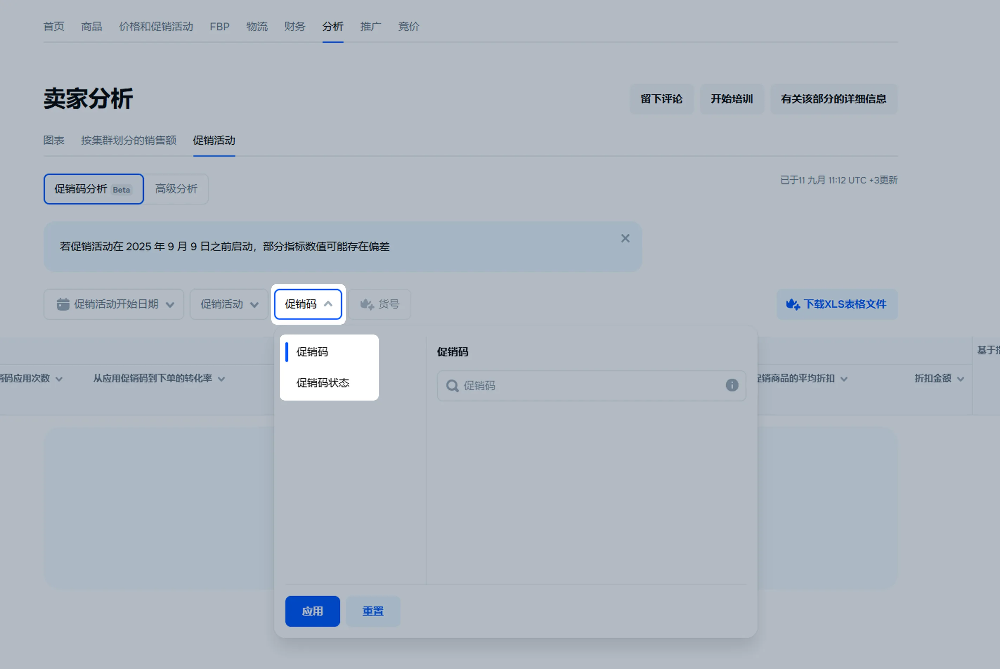
对于没有“主管”、“管理员”或“分析师”角色的员工，可以使用筛选器 促销码状态 ，以便按促销码状态对表格中的数据进行排序。
货号 ——查看一个或多个商品的数据。需订阅 Premium Plus 和 Premium Pro 。
下载数据
订阅 Premium Plus 和 Premium Pro后，您可以下载促销码分析的 XLS 报告。点击 下载XLS表格文件 即可。
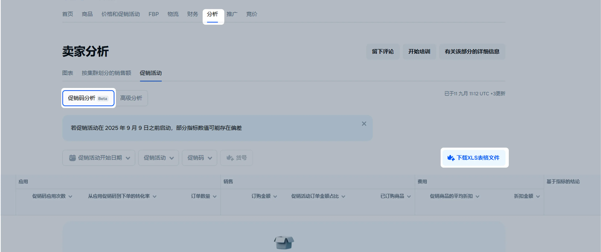
高级分析
基本设置
通过基本设置，您可以分析：
商品参加了哪些促销活动，对总体指标产生了什么样的影响；
哪些促销机制为订单带来了最多的订单；
哪些商品在促销期间受到更多的欢迎。
基本设置列表如下：
报告期间 — 选择任何销售报告期：今天、昨天、一个周、一个月或一个季度。
筛选器 :
类别 — 用于分析整个商品类目。
仓库类型 — 从Ozon仓库、卖家仓库销售的商品或从国外运送的商品。
促销活动 — 单独促销活动的指标和商品列表。
“仅限促销商品” 开关 — 用于仅查看参加促销活动的商品的分析。默认情况下，图表显示所有商品的总体分析。您可以比较参加促销活动和未参加促销活动的商品在促销期间的销售情况。
图标 — 将光标悬停在图表上，以查看每天总订单数量、平均订单数量以及与前一天的差异。
促销活动日历 — 查看您参加了哪些促销活动以及其时间。将光标悬停在促销活动行上以查看机制详情和特别优惠。
指标 — 选择四个基本指标，将显示在图表上：
订购商品数量。
订购促销商品数量。
订购金额。
促销订购金额。
其他设置
使用其他设置时，您可以：
分析在促销期间最畅销的类目、型号和品牌。
跟踪访问促销商品卡片的买家数量。如果浏览量很高但销售量很低，您可能需要完善商品卡片描述，以备下一次促销活动。
其他设置包括：
扩展报告期间 — 查看一年内的数据或在日历中设置特定期间。
按货号筛选 — 根据Ozon货号手动选择一个或多个商品。
分组 — 选择商品在图表上的显示方式：按类目、品牌或型号分组显示。
如何设置分组指标 — 选择要在图表上显示的附加指标 —— 取消和退货商品的数量，卡片访问者数量，转化率。
如何设置指标指标比较 — 比较两个指标的数据。
导出 — 以XLSX格式将数据下载到您的计算机：可按天或按您在个人中心中设置的方式进行分组。
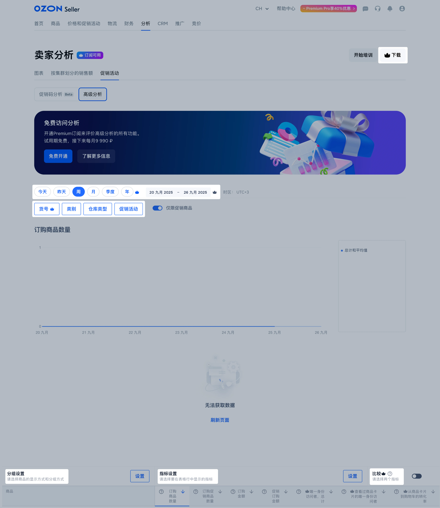
促销活动分组
数据以以下分组显示在图表上：
按 3 级类目分组的商品。在分析中，将显示 3 级类目商品，例如“女士毛衣”，其 2 级类目为“女装”，1 级类目为“服装”。
按品牌分组的商品 — 将显示卖家特定品牌的所有商品。
按所有类目级别分组的商品 — 商品将按照 1 级别的类目分组。要查看子类目和商品，请展开它们。
按 2 级类目和品牌分组的商品 — 商品将按照 2 级类目分组，品牌和相应的商品也被包括在其中。
按型号分组的商品 — 特定型号商品的销售情况。
仅限商品 — 没有分组。
设置
在图表左下角的 分组设置 框中，单击 设置 。
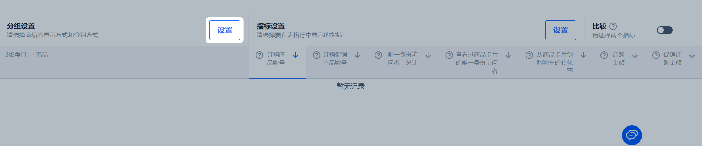
单击相应的分组，查看数据的显示方式。
选择分组并单击 应用 。
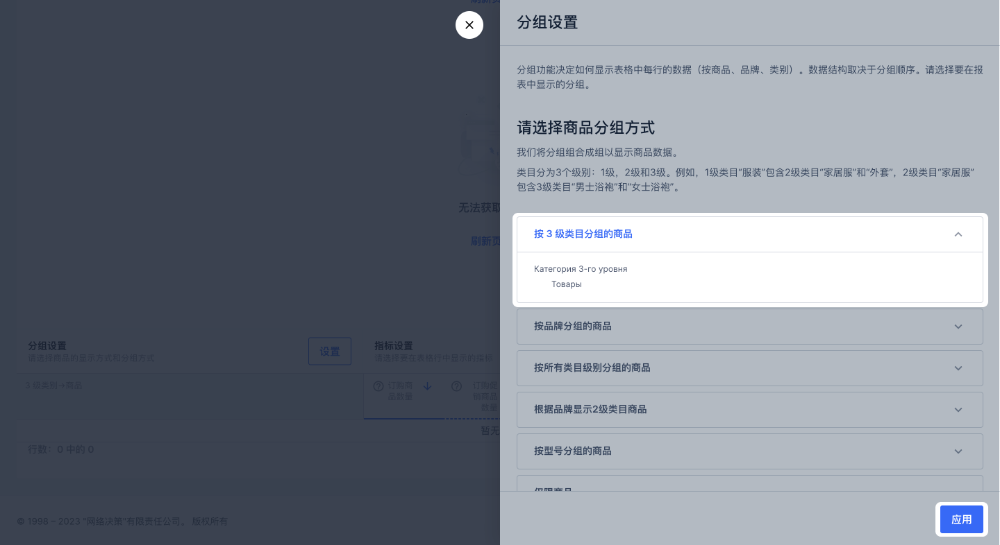
默认情况下，图表显示 总计和平均值 字段的值。您可以添加其他组、类目、型号或商品的数据 —— 请单击名称旁边的 。 要隐藏它们，请再次单击。
指标
指标决定每个商品在表格和图表中显示的数据。它们被组合成预定义的指标集：
基本指标。
访客数。
展现量。
添加到购物车的转化率。
添加到购物车次数。
按状态显示商品。
销售额。
您可以根据促销活动选择指标集：
订购促销商品数量 — 订购参加促销活动商品的数量。
订购促销商品金额 — 订购参加促销活动商品的金额。
设置
在 指标 部分，默认情况下显示“基本指标”集，图表按“订购商品数量”指标绘制。要在图表上显示其他指标，请单击其名称。
要添加其他集合到页面，请执行以下操作：
在图表右下角的 指标设置 框中，单击 设置 。
选择指标集并单击 应用 。
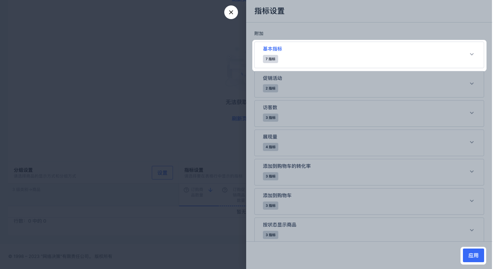
创建自定义集合
如果现有的指标集不够用，您可以创建自定义集合。为此，请执行以下操作：
在 指标设置 框中，单击 设置 。
单击 添加指标集 。
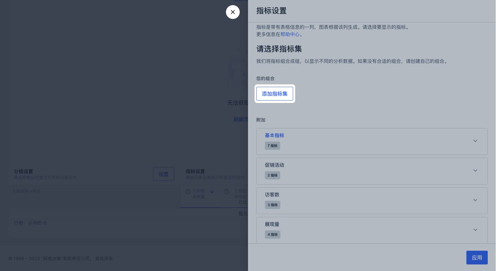
输入集合名称、选择指标，然后单击 保存 。
所选指标将显示在图表上。
要按升序或降序对指标值进行排序，请单击其名称旁边的 。
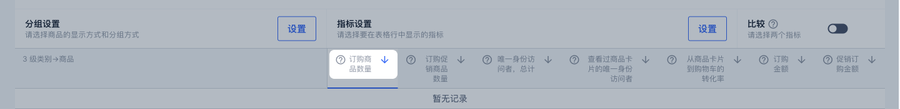
比较
您可以在图表上比较两个指标。要做到这一点，在 比较 框中选择 ，然后单击两个指标的名称。默认情况下，第一个要比较的指标是 订购商品数量 。要选择第二个指标，请将光标悬停在其名称上，然后单击 比较 。新指标将以虚线显示在图表上。
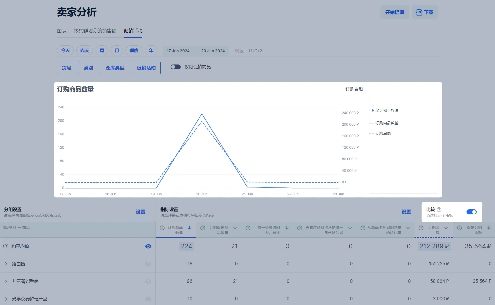
要隐藏指标，请将光标悬停在其标题上并单击 从比较中删除 。
您可以在图表上比较订购商品的总数量和订购促销商品的数量。